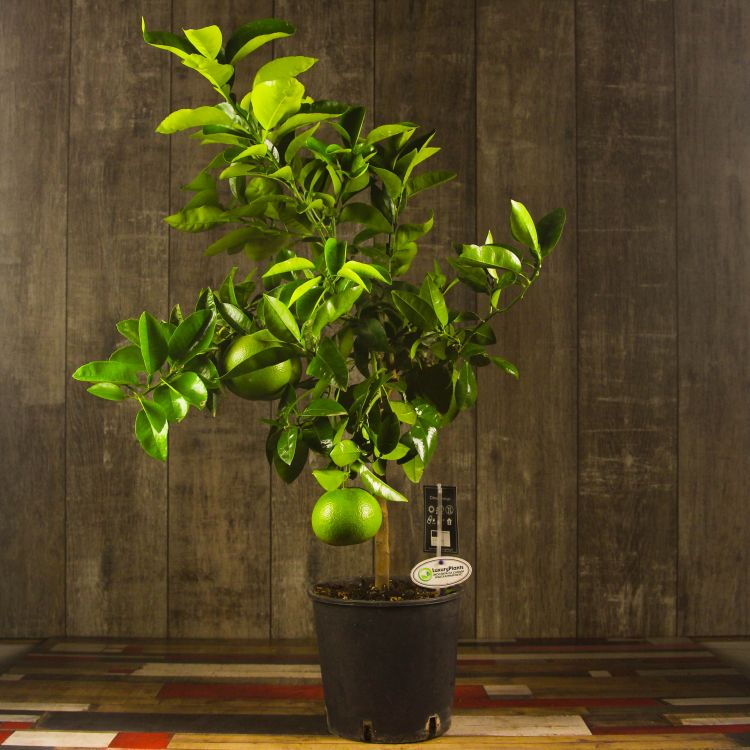

The evergreen grapefruit trees usually grow to around 5–6 m (16–20 ft) tall,
although they may reach 13–15 m (43–49 ft).

The leaves are long (up to 15 cm (5.9 in)), thin, glossy, and dark green. They produce 5 cm (2 in) white four or five petaled flowers.
Grapefruit has a relative - Orange